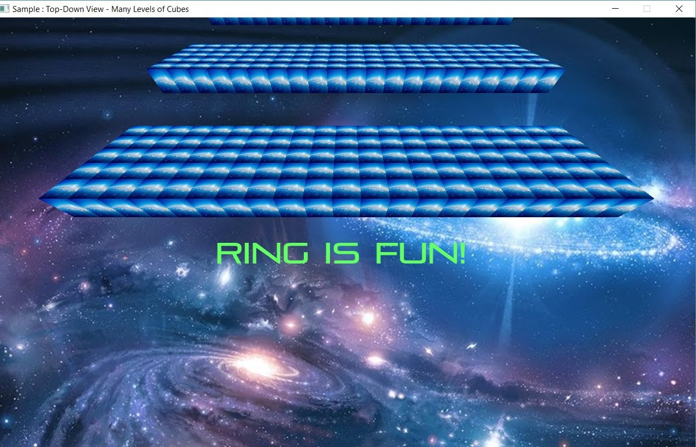
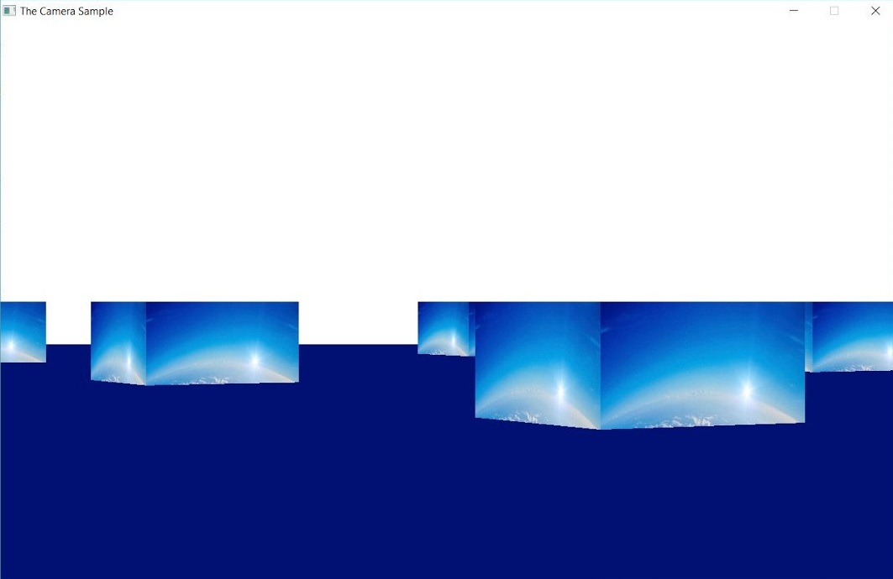
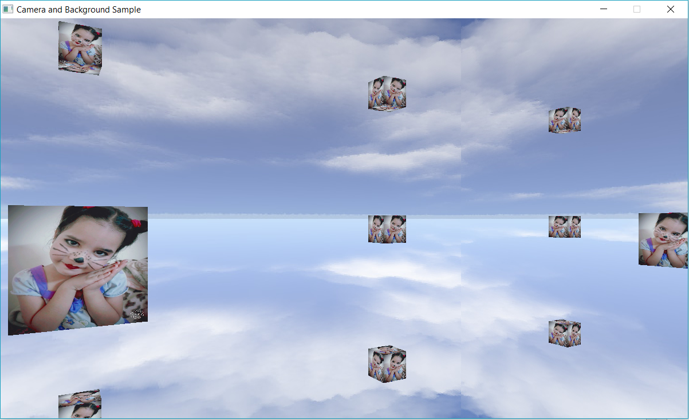

<!DOCTYPE html>
<html class="writer-html5" lang="en" >
<head>
  <meta charset="utf-8">
  
  <meta name="viewport" content="width=device-width, initial-scale=1.0">
  
  <title>What is new in Ring 1.8? &mdash; Ring 1.17 documentation</title>
  

  
  <link rel="stylesheet" href="_static/css/theme.css" type="text/css" />
  <link rel="stylesheet" href="_static/pygments.css" type="text/css" />
  <link rel="stylesheet" href="_static/css/custom.css" type="text/css" />

  
  
  
  

  
  <!--[if lt IE 9]>
    <script src="_static/js/html5shiv.min.js"></script>
  <![endif]-->
  
    
      <script type="text/javascript" id="documentation_options" data-url_root="./" src="_static/documentation_options.js"></script>
        <script src="_static/jquery.js"></script>
        <script src="_static/underscore.js"></script>
        <script src="_static/doctools.js"></script>
        <script src="_static/language_data.js"></script>
    
    <script type="text/javascript" src="_static/js/theme.js"></script>

    
    <link rel="index" title="Index" href="genindex.html" />
    <link rel="search" title="Search" href="search.html" />
    <link rel="next" title="What is new in Ring 1.9?" href="whatisnew9.html" />
    <link rel="prev" title="What is new in Ring 1.7?" href="whatisnew7.html" /> 
</head>

<body class="wy-body-for-nav">

   
  <div class="wy-grid-for-nav">
    
    <nav data-toggle="wy-nav-shift" class="wy-nav-side">
      <div class="wy-side-scroll">
        <div class="wy-side-nav-search" >
          

          
            <a href="index.html">
          

          
            
            
          
          </a>

          

          
<div role="search">
  <form id="rtd-search-form" class="wy-form" action="search.html" method="get">
    <input type="text" name="q" placeholder="Search docs" />
    <input type="hidden" name="check_keywords" value="yes" />
    <input type="hidden" name="area" value="default" />
  </form>
</div>

          
        </div>

        
        <div class="wy-menu wy-menu-vertical" data-spy="affix" role="navigation" aria-label="main navigation">
          
            
            
              
            
            
              <ul class="current">
<li class="toctree-l1"><a class="reference internal" href="ringapps.html">Applications developed in a few hours</a></li>
<li class="toctree-l1"><a class="reference internal" href="introduction.html">Introduction</a></li>
<li class="toctree-l1"><a class="reference internal" href="ringnotepad.html">Using Ring Notepad</a></li>
<li class="toctree-l1"><a class="reference internal" href="getting_started.html">Getting Started - First Style</a></li>
<li class="toctree-l1"><a class="reference internal" href="getting_started2.html">Getting Started - Second Style</a></li>
<li class="toctree-l1"><a class="reference internal" href="getting_started3.html">Getting Started - Third Style</a></li>
<li class="toctree-l1"><a class="reference internal" href="variables.html">Variables</a></li>
<li class="toctree-l1"><a class="reference internal" href="operators.html">Operators</a></li>
<li class="toctree-l1"><a class="reference internal" href="controlstructures.html">Control Structures - First Style</a></li>
<li class="toctree-l1"><a class="reference internal" href="controlstructures2.html">Control Structures - Second Style</a></li>
<li class="toctree-l1"><a class="reference internal" href="controlstructures3.html">Control Structures - Third Style</a></li>
<li class="toctree-l1"><a class="reference internal" href="getinput.html">Getting Input</a></li>
<li class="toctree-l1"><a class="reference internal" href="functions.html">Functions - First Style</a></li>
<li class="toctree-l1"><a class="reference internal" href="functions2.html">Functions - Second Style</a></li>
<li class="toctree-l1"><a class="reference internal" href="functions3.html">Functions - Third Style</a></li>
<li class="toctree-l1"><a class="reference internal" href="programstructure.html">Program Structure</a></li>
<li class="toctree-l1"><a class="reference internal" href="lists.html">Lists</a></li>
<li class="toctree-l1"><a class="reference internal" href="strings.html">Strings</a></li>
<li class="toctree-l1"><a class="reference internal" href="dateandtime.html">Date and Time</a></li>
<li class="toctree-l1"><a class="reference internal" href="checkandconvert.html">Check Data Type and Conversion</a></li>
<li class="toctree-l1"><a class="reference internal" href="mathfunc.html">Mathematical Functions</a></li>
<li class="toctree-l1"><a class="reference internal" href="files.html">Files</a></li>
<li class="toctree-l1"><a class="reference internal" href="systemfunc.html">System Functions</a></li>
<li class="toctree-l1"><a class="reference internal" href="evaldebug.html">Eval() and Debugging</a></li>
<li class="toctree-l1"><a class="reference internal" href="demo.html">Demo Programs</a></li>
<li class="toctree-l1"><a class="reference internal" href="odbc.html">ODBC Functions</a></li>
<li class="toctree-l1"><a class="reference internal" href="mysql.html">MySQL Functions</a></li>
<li class="toctree-l1"><a class="reference internal" href="sqlite.html">SQLite Functions</a></li>
<li class="toctree-l1"><a class="reference internal" href="postgresql.html">PostgreSQL Functions</a></li>
<li class="toctree-l1"><a class="reference internal" href="secfunc.html">Security and Internet Functions</a></li>
<li class="toctree-l1"><a class="reference internal" href="oop.html">Object Oriented Programming (OOP)</a></li>
<li class="toctree-l1"><a class="reference internal" href="fp.html">Functional Programming (FP)</a></li>
<li class="toctree-l1"><a class="reference internal" href="metaprog.html">Reflection and Meta-programming</a></li>
<li class="toctree-l1"><a class="reference internal" href="declarative.html">Declarative Programming using Nested Structures</a></li>
<li class="toctree-l1"><a class="reference internal" href="natural.html">Natural language programming</a></li>
<li class="toctree-l1"><a class="reference internal" href="naturallibrary.html">Using the Natural Library</a></li>
<li class="toctree-l1"><a class="reference internal" href="scope.html">Scope Rules for Variables and Attributes</a></li>
<li class="toctree-l1"><a class="reference internal" href="scope2.html">Scope Rules for Functions and Methods</a></li>
<li class="toctree-l1"><a class="reference internal" href="syntaxflexibility.html">Syntax Flexibility</a></li>
<li class="toctree-l1"><a class="reference internal" href="typehints.html">The Type Hints Library</a></li>
<li class="toctree-l1"><a class="reference internal" href="debug.html">The Trace Library and the Interactive Debugger</a></li>
<li class="toctree-l1"><a class="reference internal" href="ringemb.html">Embedding Ring Language in Ring Programs</a></li>
<li class="toctree-l1"><a class="reference internal" href="stdlib.html">Stdlib Functions</a></li>
<li class="toctree-l1"><a class="reference internal" href="stdlibclasses.html">Stdlib Classes</a></li>
<li class="toctree-l1"><a class="reference internal" href="qt.html">Desktop, WebAssembly and Mobile development using RingQt</a></li>
<li class="toctree-l1"><a class="reference internal" href="formdesigner.html">Using the Form Designer</a></li>
<li class="toctree-l1"><a class="reference internal" href="qt3d.html">Graphics Programming using RingQt3D</a></li>
<li class="toctree-l1"><a class="reference internal" href="ringqtobjects.html">Objects Library for RingQt Application</a></li>
<li class="toctree-l1"><a class="reference internal" href="multilanguage.html">Multi-language Applications</a></li>
<li class="toctree-l1"><a class="reference internal" href="qtmobile.html">Building RingQt Applications for Mobile</a></li>
<li class="toctree-l1"><a class="reference internal" href="qtwebassembly.html">Building RingQt Applications for WebAssembly</a></li>
<li class="toctree-l1"><a class="reference internal" href="web.html">Web Development (CGI Library)</a></li>
<li class="toctree-l1"><a class="reference internal" href="deployincloud.html">Deploying Web Applications in the Cloud</a></li>
<li class="toctree-l1"><a class="reference internal" href="allegro.html">Graphics and 2D Games programming using RingAllegro</a></li>
<li class="toctree-l1"><a class="reference internal" href="gameengine.html">Demo Project - Game Engine for 2D Games</a></li>
<li class="toctree-l1"><a class="reference internal" href="gameengineandorid.html">Building Games For Android</a></li>
<li class="toctree-l1"><a class="reference internal" href="ringraylib.html">Developing Games using RingRayLib</a></li>
<li class="toctree-l1"><a class="reference internal" href="usingopengl.html">Using RingOpenGL and RingFreeGLUT for 3D Graphics</a></li>
<li class="toctree-l1"><a class="reference internal" href="usingopengl2.html">Using RingOpenGL and RingAllegro for 3D Graphics</a></li>
<li class="toctree-l1"><a class="reference internal" href="goldmagic800.html">Demo Project - The Gold Magic 800 Game</a></li>
<li class="toctree-l1"><a class="reference internal" href="tilengine.html">Using RingTilengine</a></li>
<li class="toctree-l1"><a class="reference internal" href="performancetips.html">Performance Tips</a></li>
<li class="toctree-l1"><a class="reference internal" href="compiler.html">Command Line Options</a></li>
<li class="toctree-l1"><a class="reference internal" href="distribute.html">Distributing Ring Applications (Manual)</a></li>
<li class="toctree-l1"><a class="reference internal" href="distribute_ring2exe.html">Distributing Ring Applications using Ring2EXE</a></li>
<li class="toctree-l1"><a class="reference internal" href="ringpm.html">The Ring Package Manager (RingPM)</a></li>
<li class="toctree-l1"><a class="reference internal" href="zerolib.html">ZeroLib Functions Reference</a></li>
<li class="toctree-l1"><a class="reference internal" href="foxringfuncsdoc.html">FoxRing Functions Reference</a></li>
<li class="toctree-l1"><a class="reference internal" href="bignumber.html">BigNumber Functions Reference</a></li>
<li class="toctree-l1"><a class="reference internal" href="csvlib.html">CSVLib Functions Reference</a></li>
<li class="toctree-l1"><a class="reference internal" href="jsonlib.html">JSONLib Functions Reference</a></li>
<li class="toctree-l1"><a class="reference internal" href="httplib.html">HTTPLib Functions Reference</a></li>
<li class="toctree-l1"><a class="reference internal" href="tokenslib.html">TokensLib Functions Reference</a></li>
<li class="toctree-l1"><a class="reference internal" href="libcurl.html">Using RingLibCurl</a></li>
<li class="toctree-l1"><a class="reference internal" href="ringlibcurlfuncsdoc.html">RingLibCurl Functions Reference</a></li>
<li class="toctree-l1"><a class="reference internal" href="socket.html">Using RingSockets</a></li>
<li class="toctree-l1"><a class="reference internal" href="threads.html">Using RingThreads</a></li>
<li class="toctree-l1"><a class="reference internal" href="libui.html">Using RingLibui</a></li>
<li class="toctree-l1"><a class="reference internal" href="ringzip.html">Using RingZip</a></li>
<li class="toctree-l1"><a class="reference internal" href="ringlibzipfuncsdoc.html">RingLibZip Functions Reference</a></li>
<li class="toctree-l1"><a class="reference internal" href="ringmurmurhashfuncsdoc.html">RingMurmurHash Functions Reference</a></li>
<li class="toctree-l1"><a class="reference internal" href="ringconsolecolorsfuncsdoc.html">RingConsoleColors Functions Reference</a></li>
<li class="toctree-l1"><a class="reference internal" href="ringallegrofuncsdoc.html">RingAllegro Functions Reference</a></li>
<li class="toctree-l1"><a class="reference internal" href="libsdl.html">Using RingLibSDL</a></li>
<li class="toctree-l1"><a class="reference internal" href="ringlibsdlfuncsdoc.html">RingLibSDL Functions Reference</a></li>
<li class="toctree-l1"><a class="reference internal" href="libuv.html">Using Ringlibuv</a></li>
<li class="toctree-l1"><a class="reference internal" href="ringlibuvfuncsdoc.html">RingLibuv Functions Reference</a></li>
<li class="toctree-l1"><a class="reference internal" href="ringfreeglutfuncsdoc.html">RingFreeGLUT Functions Reference</a></li>
<li class="toctree-l1"><a class="reference internal" href="ringstbimage.html">RingStbImage Functions Reference</a></li>
<li class="toctree-l1"><a class="reference internal" href="ringopengl32funcsdoc.html">RingOpenGL (OpenGL 3.2) Functions Reference</a></li>
<li class="toctree-l1"><a class="reference internal" href="qtclassesdoc.html">RingQt Classes and Methods Reference</a></li>
<li class="toctree-l1"><a class="reference internal" href="lowlevel.html">Low Level Functions</a></li>
<li class="toctree-l1"><a class="reference internal" href="extension_tutorial.html">Tutorial: Ring Extensions in C/C++</a></li>
<li class="toctree-l1"><a class="reference internal" href="extension.html">Extension using the C/C++ languages</a></li>
<li class="toctree-l1"><a class="reference internal" href="embedding.html">Embedding Ring Language in C/C++ Programs</a></li>
<li class="toctree-l1"><a class="reference internal" href="codegenerator.html">Code Generator for wrapping C/C++ Libraries</a></li>
<li class="toctree-l1"><a class="reference internal" href="ringbeep.html">Create your first extension using the Code Generator</a></li>
<li class="toctree-l1"><a class="reference internal" href="languagedesign.html">Release Notes: Version 1.0</a></li>
<li class="toctree-l1"><a class="reference internal" href="whatisnew.html">Release Notes: Version 1.1</a></li>
<li class="toctree-l1"><a class="reference internal" href="whatisnew2.html">Release Notes: Version 1.2</a></li>
<li class="toctree-l1"><a class="reference internal" href="whatisnew3.html">Release Notes: Version 1.3</a></li>
<li class="toctree-l1"><a class="reference internal" href="whatisnew4.html">Release Notes: Version 1.4</a></li>
<li class="toctree-l1"><a class="reference internal" href="whatisnew5.html">Release Notes: Version 1.5</a></li>
<li class="toctree-l1"><a class="reference internal" href="whatisnew6.html">Release Notes: Version 1.6</a></li>
<li class="toctree-l1"><a class="reference internal" href="whatisnew7.html">Release Notes: Version 1.7</a></li>
<li class="toctree-l1 current"><a class="current reference internal" href="#">Release Notes: Version 1.8</a><ul>
<li class="toctree-l2"><a class="reference internal" href="#list-of-changes-and-new-features">List of changes and new features</a></li>
<li class="toctree-l2"><a class="reference internal" href="#better-performance">Better Performance</a></li>
<li class="toctree-l2"><a class="reference internal" href="#find-in-files-application">Find in files Application</a></li>
<li class="toctree-l2"><a class="reference internal" href="#string2constant-application">String2Constant Application</a></li>
<li class="toctree-l2"><a class="reference internal" href="#stopwatch-application">StopWatch Application</a></li>
<li class="toctree-l2"><a class="reference internal" href="#more-3d-samples">More 3D Samples</a></li>
<li class="toctree-l2"><a class="reference internal" href="#compiling-on-manjaro-linux">Compiling on Manjaro Linux</a></li>
<li class="toctree-l2"><a class="reference internal" href="#using-this-in-the-class-region-as-self">Using This in the class region as Self</a></li>
<li class="toctree-l2"><a class="reference internal" href="#default-value-for-object-attributes-is-null">Default value for object attributes is NULL</a></li>
<li class="toctree-l2"><a class="reference internal" href="#the-for-loops-uses-the-local-scope">The For Loops uses the local scope</a></li>
<li class="toctree-l2"><a class="reference internal" href="#merge-binary-characters">Merge binary characters</a></li>
<li class="toctree-l2"><a class="reference internal" href="#foxring-library">FoxRing Library</a></li>
<li class="toctree-l2"><a class="reference internal" href="#better-form-designer">Better Form Designer</a></li>
<li class="toctree-l2"><a class="reference internal" href="#better-cards-game">Better Cards Game</a></li>
<li class="toctree-l2"><a class="reference internal" href="#better-ringqt">Better RingQt</a></li>
<li class="toctree-l2"><a class="reference internal" href="#better-code-generator-for-extensions">Better Code Generator For Extensions</a></li>
<li class="toctree-l2"><a class="reference internal" href="#better-ring-compiler-and-vm">Better Ring Compiler and VM</a></li>
<li class="toctree-l2"><a class="reference internal" href="#notes-to-extensions-creators">Notes to extensions creators</a></li>
</ul>
</li>
<li class="toctree-l1"><a class="reference internal" href="whatisnew9.html">Release Notes: Version 1.9</a></li>
<li class="toctree-l1"><a class="reference internal" href="whatisnew10.html">Release Notes: Version 1.10</a></li>
<li class="toctree-l1"><a class="reference internal" href="whatisnew11.html">Release Notes: Version 1.11</a></li>
<li class="toctree-l1"><a class="reference internal" href="whatisnew12.html">Release Notes: Version 1.12</a></li>
<li class="toctree-l1"><a class="reference internal" href="whatisnew13.html">Release Notes: Version 1.13</a></li>
<li class="toctree-l1"><a class="reference internal" href="whatisnew14.html">Release Notes: Version 1.14</a></li>
<li class="toctree-l1"><a class="reference internal" href="whatisnew15.html">Release Notes: Version 1.15</a></li>
<li class="toctree-l1"><a class="reference internal" href="whatisnew16.html">Release Notes: Version 1.16</a></li>
<li class="toctree-l1"><a class="reference internal" href="whatisnew17.html">Release Notes: Version 1.17</a></li>
<li class="toctree-l1"><a class="reference internal" href="codeeditors.html">Using Other Code Editors</a></li>
<li class="toctree-l1"><a class="reference internal" href="faq.html">Frequently Asked Questions (FAQ)</a></li>
<li class="toctree-l1"><a class="reference internal" href="sourcecode.html">How to Compile Ring From Source Code?</a></li>
<li class="toctree-l1"><a class="reference internal" href="contribute.html">How to contribute?</a></li>
<li class="toctree-l1"><a class="reference internal" href="reference.html">Language Specification</a></li>
<li class="toctree-l1"><a class="reference internal" href="resources.html">Resources</a></li>
</ul>

            
          
        </div>
        
      </div>
    </nav>

    <section data-toggle="wy-nav-shift" class="wy-nav-content-wrap">

      
      <nav class="wy-nav-top" aria-label="top navigation">
        
          <i data-toggle="wy-nav-top" class="fa fa-bars"></i>
          <a href="index.html">Ring</a>
        
      </nav>


      <div class="wy-nav-content">
        
        <div class="rst-content">
        
          


<div role="navigation" aria-label="breadcrumbs navigation">

  <ul class="wy-breadcrumbs">
    
      <li><a href="index.html" class="icon icon-home"></a> &raquo;</li>
        
      <li>What is new in Ring 1.8?</li>
    
    
      <li class="wy-breadcrumbs-aside">
        
            
        
      </li>
    
  </ul>

  
  <hr/>
</div>
          <div role="main" class="document" itemscope="itemscope" itemtype="http://schema.org/Article">
           <div itemprop="articleBody">
            
  <div class="section" id="what-is-new-in-ring-1-8">
<span id="index-0"></span><h1>What is new in Ring 1.8?<a class="headerlink" href="#what-is-new-in-ring-1-8" title="Permalink to this headline">¶</a></h1>
<p>In this chapter we will learn about the changes and new features in Ring 1.8 release.</p>
<div class="section" id="list-of-changes-and-new-features">
<span id="index-1"></span><h2>List of changes and new features<a class="headerlink" href="#list-of-changes-and-new-features" title="Permalink to this headline">¶</a></h2>
<p>Ring 1.8 comes with the next features!</p>
<ul class="simple">
<li><p>Better Performance</p></li>
<li><p>Find in files Application</p></li>
<li><p>String2Constant Application</p></li>
<li><p>StopWatch Application</p></li>
<li><p>More 3D Samples</p></li>
<li><p>Compiling on Manjaro Linux</p></li>
<li><p>Using This in the class region as Self</p></li>
<li><p>Default value for object attributes is NULL</p></li>
<li><p>The For Loops uses the local scope</p></li>
<li><p>Merge binary characters</p></li>
<li><p>FoxRing Library</p></li>
<li><p>Better Form Designer</p></li>
<li><p>Better Cards Game</p></li>
<li><p>Better RingQt</p></li>
<li><p>Better Code Generator For Extensions</p></li>
<li><p>Better Ring Compiler and VM</p></li>
<li><p>Notes to extensions creators</p></li>
</ul>
</div>
<div class="section" id="better-performance">
<span id="index-2"></span><h2>Better Performance<a class="headerlink" href="#better-performance" title="Permalink to this headline">¶</a></h2>
<p>Ring 1.8 is faster than Ring 1.7</p>
<p>The performance gain is between 10% and 100% based on the application.</p>
<p>Check the 3D samples in this release to get an idea about the current performance.</p>
<p>For more information check the Performance Tips chapter.</p>
</div>
<div class="section" id="find-in-files-application">
<span id="index-3"></span><h2>Find in files Application<a class="headerlink" href="#find-in-files-application" title="Permalink to this headline">¶</a></h2>
<p>Ring 1.8 comes with Find in files application</p>

</div>
<div class="section" id="string2constant-application">
<span id="index-4"></span><h2>String2Constant Application<a class="headerlink" href="#string2constant-application" title="Permalink to this headline">¶</a></h2>
<p>Ring 1.8 comes with String2Constant application</p>
<p>Using this tool we can convert the source code to be based on constants instead of string literals</p>
<p>Then we can store constants in separate source code files that we can translate to different languages</p>
<p>Where we can have special file for each language, like (English.ring, Arabic.ring and so on)</p>
<p>Using this simple tool, the Form Designer is translated to the Arabic language.</p>
<p>For more information check the Multi-language Applications chapter.</p>

</div>
<div class="section" id="stopwatch-application">
<span id="index-5"></span><h2>StopWatch Application<a class="headerlink" href="#stopwatch-application" title="Permalink to this headline">¶</a></h2>
<p>Ring 1.8 comes with StopWatch application</p>

</div>
<div class="section" id="more-3d-samples">
<span id="index-6"></span><h2>More 3D Samples<a class="headerlink" href="#more-3d-samples" title="Permalink to this headline">¶</a></h2>
<p>Ring 1.8 comes with more 3D Samples</p>
<p>The next screen shot for the Top-Down view - Many levels of cubes sample</p>

<p>The next screen shot for the Camera Sample</p>

<p>The next screen shot for the Camera and background sample</p>
<p>Developer : Azzeddine Remmal</p>

</div>
<div class="section" id="compiling-on-manjaro-linux">
<span id="index-7"></span><h2>Compiling on Manjaro Linux<a class="headerlink" href="#compiling-on-manjaro-linux" title="Permalink to this headline">¶</a></h2>
<p>Ring 1.8 is tested on Manjaro Linux too</p>
<p>Tests by : Iip Rifai</p>

</div>
<div class="section" id="using-this-in-the-class-region-as-self">
<span id="index-8"></span><h2>Using This in the class region as Self<a class="headerlink" href="#using-this-in-the-class-region-as-self" title="Permalink to this headline">¶</a></h2>
<p>The class region is the region that comes after the class name and before any method.</p>
<p>Now we can use This in the class region as Self.</p>
<p>Example:</p>
<div class="highlight-ring notranslate"><div class="highlight"><pre><span></span><span class="k">func</span> <span class="n">main</span>

        <span class="n">o1</span> <span class="o">=</span> <span class="k">new</span> <span class="n">program</span> <span class="p">{</span>
                <span class="n">test</span><span class="p">()</span>
        <span class="p">}</span>

        <span class="o">?</span> <span class="n">o1</span>

<span class="k">class</span> <span class="n">program</span>

        <span class="n">this</span><span class="p">.</span><span class="n">name</span> <span class="o">=</span> <span class="s">&quot;My Application&quot;</span>
        <span class="n">this</span><span class="p">.</span><span class="n">version</span> <span class="o">=</span> <span class="s">&quot;1.0&quot;</span>
        <span class="o">?</span> <span class="n">name</span> <span class="o">?</span> <span class="n">version</span>

        <span class="k">func</span> <span class="n">test</span>
                <span class="o">?</span> <span class="s">&quot;Name    = &quot;</span> <span class="o">+</span> <span class="n">name</span>
                <span class="o">?</span> <span class="s">&quot;Version = &quot;</span> <span class="o">+</span> <span class="n">version</span>
</pre></div>
</div>
<p>Output</p>
<div class="highlight-none notranslate"><div class="highlight"><pre><span></span>My Application
1.0
Name    = My Application
Version = 1.0
name: My Application
version: 1.0
</pre></div>
</div>
<div class="admonition note">
<p class="admonition-title">Note</p>
<p>When we use braces to change the current active object, Using This we can still point to the class.</p>
</div>
<div class="admonition tip">
<p class="admonition-title">Tip</p>
<p>The difference between This and Self is that Self point to the current active object that we can change using braces.</p>
</div>
<p>Remember that in most cases we don’t need to use This or Self in the class region</p>
<p>We can write</p>
<div class="highlight-ring notranslate"><div class="highlight"><pre><span></span><span class="k">class</span> <span class="n">program</span> <span class="n">name</span> <span class="n">version</span>
</pre></div>
</div>
<p>Or</p>
<div class="highlight-ring notranslate"><div class="highlight"><pre><span></span><span class="k">class</span> <span class="n">program</span> <span class="n">name</span><span class="o">=</span><span class="s">&quot;My Application&quot;</span> <span class="n">version</span><span class="o">=</span><span class="s">&quot;1.0&quot;</span>
</pre></div>
</div>
<div class="admonition note">
<p class="admonition-title">Note</p>
<p>We use This or Self in the class region just to avoid conflict with global variables that are defined with the same name.</p>
</div>
</div>
<div class="section" id="default-value-for-object-attributes-is-null">
<span id="index-9"></span><h2>Default value for object attributes is NULL<a class="headerlink" href="#default-value-for-object-attributes-is-null" title="Permalink to this headline">¶</a></h2>
<p>Starting from Ring 1.8 the default value for object attributes is NULL</p>
<p>In Ring, the NULL value is just an empty string or a string that contains “NULL”</p>
<p>We can check for NULL values using the isNULL() function</p>
<p>Example:</p>
<div class="highlight-ring notranslate"><div class="highlight"><pre><span></span><span class="n">oProgram</span> <span class="o">=</span> <span class="k">new</span> <span class="n">Program</span>
<span class="o">?</span> <span class="n">oProgram</span><span class="p">.</span><span class="n">name</span>
<span class="o">?</span> <span class="n">oProgram</span><span class="p">.</span><span class="n">version</span>
<span class="o">?</span> <span class="n">isNULL</span><span class="p">(</span><span class="n">oProgram</span><span class="p">.</span><span class="n">name</span><span class="p">)</span>
<span class="o">?</span> <span class="n">isNULL</span><span class="p">(</span><span class="n">oProgram</span><span class="p">.</span><span class="n">version</span><span class="p">)</span>
<span class="n">oProgram</span> <span class="p">{</span> <span class="n">name</span><span class="o">=</span><span class="s">&quot;My Application&quot;</span> <span class="n">version</span><span class="o">=</span><span class="s">&quot;1.0&quot;</span> <span class="p">}</span>
<span class="o">?</span> <span class="n">isNULL</span><span class="p">(</span><span class="n">oProgram</span><span class="p">.</span><span class="n">name</span><span class="p">)</span>
<span class="o">?</span> <span class="n">isNULL</span><span class="p">(</span><span class="n">oProgram</span><span class="p">.</span><span class="n">version</span><span class="p">)</span>
<span class="o">?</span> <span class="n">oProgram</span>

<span class="k">class</span> <span class="n">program</span>
        <span class="n">name</span>
        <span class="n">version</span>
</pre></div>
</div>
<p>Output:</p>
<div class="highlight-none notranslate"><div class="highlight"><pre><span></span>NULL
NULL
1
1
0
0
name: My Application
version: 1.0
</pre></div>
</div>
<p>In previous versions of Ring, trying to access the object attribute before assigning a value to it</p>
<p>Will lead to runtime error and you can’t check it using isnull()</p>
<p>The only way was assigning a value or using try/catch/end</p>
<p>We changed this behavior so we can have full control in seamless way.</p>
</div>
<div class="section" id="the-for-loops-uses-the-local-scope">
<span id="index-10"></span><h2>The For Loops uses the local scope<a class="headerlink" href="#the-for-loops-uses-the-local-scope" title="Permalink to this headline">¶</a></h2>
<p>In Ring 1.8, when the For Loop defines new identifier (variable) it will define it in the local scope.</p>
<p>Example:</p>
<div class="highlight-ring notranslate"><div class="highlight"><pre><span></span><span class="n">x</span> <span class="o">=</span> <span class="mi">10</span>
<span class="o">?</span> <span class="n">x</span>             <span class="c"># Print 10</span>
<span class="n">test1</span><span class="p">()</span>
<span class="o">?</span> <span class="n">x</span>             <span class="c"># Print 10</span>
<span class="n">test2</span><span class="p">()</span>
<span class="o">?</span> <span class="n">x</span>             <span class="c"># Print 10</span>

<span class="k">func</span> <span class="n">test1</span>
        <span class="k">for</span> <span class="n">x</span> <span class="o">=</span> <span class="mi">1</span> <span class="k">to</span> <span class="mi">5</span>
        <span class="k">next</span>
        <span class="o">?</span> <span class="n">x</span>     <span class="c"># Print 6</span>

<span class="k">func</span> <span class="n">test2</span>
        <span class="kt">list</span> <span class="o">=</span> <span class="mi">1</span><span class="p">:</span><span class="mi">5</span>
        <span class="k">for</span> <span class="n">x</span> <span class="k">in</span> <span class="kt">list</span>
        <span class="k">next</span>
        <span class="o">?</span> <span class="n">x</span>     <span class="c"># Print NULL (The &quot;For In&quot; loop will kill the reference after the loop)</span>
</pre></div>
</div>
<p>Output:</p>
<div class="highlight-ring notranslate"><div class="highlight"><pre><span></span><span class="mi">10</span>
<span class="mi">6</span>
<span class="mi">10</span>
<span class="kp">NULL</span>
<span class="mi">10</span>
</pre></div>
</div>
</div>
<div class="section" id="merge-binary-characters">
<span id="index-11"></span><h2>Merge binary characters<a class="headerlink" href="#merge-binary-characters" title="Permalink to this headline">¶</a></h2>
<p>From Ring 1.0 we can create binary strings and do operations on these strings.</p>
<p>Now in Ring 1.8, we can get individual characters from these strings and merge them together using
the ‘+’ operator.</p>
<p>Example:</p>
<div class="highlight-ring notranslate"><div class="highlight"><pre><span></span><span class="n">cStr</span> <span class="o">=</span> <span class="s">&quot;Welcome&quot;</span>
<span class="o">?</span> <span class="n">cstr</span><span class="o">[</span><span class="mi">1</span><span class="o">]</span> <span class="o">+</span> <span class="n">cstr</span><span class="o">[</span><span class="mi">2</span><span class="o">]</span> <span class="o">+</span> <span class="n">cStr</span><span class="o">[</span><span class="mi">5</span><span class="o">]</span>
<span class="n">v</span> <span class="o">=</span> <span class="n">cstr</span><span class="o">[</span><span class="mi">1</span><span class="o">]</span> <span class="o">+</span> <span class="n">cstr</span><span class="o">[</span><span class="mi">2</span><span class="o">]</span> <span class="o">+</span> <span class="n">cStr</span><span class="o">[</span><span class="mi">5</span><span class="o">]</span>
<span class="o">?</span> <span class="n">v</span>
<span class="o">?</span> <span class="n">len</span><span class="p">(</span><span class="n">v</span><span class="p">)</span>
<span class="n">c1</span> <span class="o">=</span> <span class="n">cStr</span><span class="o">[</span><span class="mi">1</span><span class="o">]</span>
<span class="o">?</span> <span class="n">c1</span>
<span class="n">aList</span> <span class="o">=</span> <span class="o">[</span><span class="mi">1</span><span class="p">,</span><span class="mi">2</span><span class="p">,</span><span class="mi">3</span><span class="o">]</span>
<span class="n">cStr</span> <span class="o">=</span> <span class="s">&quot;&quot;</span>
<span class="k">for</span> <span class="n">item</span> <span class="k">in</span> <span class="n">aList</span>
        <span class="n">cStr</span> <span class="o">+=</span> <span class="n">int2bytes</span><span class="p">(</span><span class="n">item</span><span class="p">)</span>
<span class="k">next</span>
<span class="o">?</span> <span class="s">&quot;All String&quot;</span>
<span class="o">?</span> <span class="n">len</span><span class="p">(</span><span class="n">cStr</span><span class="p">)</span>
<span class="o">?</span> <span class="s">&quot;First Part&quot;</span>
<span class="n">n1</span> <span class="o">=</span> <span class="n">cStr</span><span class="o">[</span><span class="mi">1</span><span class="o">]</span> <span class="o">+</span> <span class="n">cStr</span><span class="o">[</span><span class="mi">2</span><span class="o">]</span> <span class="o">+</span> <span class="n">cStr</span><span class="o">[</span><span class="mi">3</span><span class="o">]</span> <span class="o">+</span> <span class="n">cStr</span><span class="o">[</span><span class="mi">4</span><span class="o">]</span>
<span class="o">?</span> <span class="n">len</span><span class="p">(</span><span class="n">n1</span><span class="p">)</span>
<span class="o">?</span> <span class="s">&quot;Second Part&quot;</span>
<span class="n">n2</span> <span class="o">=</span> <span class="n">cStr</span><span class="o">[</span><span class="mi">5</span><span class="o">]</span> <span class="o">+</span> <span class="n">cStr</span><span class="o">[</span><span class="mi">6</span><span class="o">]</span> <span class="o">+</span> <span class="n">cStr</span><span class="o">[</span><span class="mi">7</span><span class="o">]</span> <span class="o">+</span> <span class="n">cStr</span><span class="o">[</span><span class="mi">8</span><span class="o">]</span>
<span class="o">?</span> <span class="n">len</span><span class="p">(</span><span class="n">n2</span><span class="p">)</span>
<span class="o">?</span> <span class="s">&quot;Third Part&quot;</span>
<span class="n">n3</span> <span class="o">=</span> <span class="n">cStr</span><span class="o">[</span><span class="mi">9</span><span class="o">]</span> <span class="o">+</span> <span class="n">cStr</span><span class="o">[</span><span class="mi">10</span><span class="o">]</span> <span class="o">+</span> <span class="n">cStr</span><span class="o">[</span><span class="mi">11</span><span class="o">]</span> <span class="o">+</span> <span class="n">cStr</span><span class="o">[</span><span class="mi">12</span><span class="o">]</span>
<span class="o">?</span> <span class="n">len</span><span class="p">(</span><span class="n">n3</span><span class="p">)</span>
<span class="o">?</span> <span class="s">&quot;All String&quot;</span>
<span class="n">cString</span> <span class="o">=</span> <span class="n">cStr</span><span class="o">[</span><span class="mi">1</span><span class="o">]</span> <span class="o">+</span> <span class="n">cStr</span><span class="o">[</span><span class="mi">2</span><span class="o">]</span> <span class="o">+</span> <span class="n">cStr</span><span class="o">[</span><span class="mi">3</span><span class="o">]</span> <span class="o">+</span> <span class="n">cStr</span><span class="o">[</span><span class="mi">4</span><span class="o">]</span> <span class="o">+</span>
          <span class="n">cStr</span><span class="o">[</span><span class="mi">5</span><span class="o">]</span> <span class="o">+</span> <span class="n">cStr</span><span class="o">[</span><span class="mi">6</span><span class="o">]</span> <span class="o">+</span> <span class="n">cStr</span><span class="o">[</span><span class="mi">7</span><span class="o">]</span> <span class="o">+</span> <span class="n">cStr</span><span class="o">[</span><span class="mi">8</span><span class="o">]</span> <span class="o">+</span>
          <span class="n">cStr</span><span class="o">[</span><span class="mi">9</span><span class="o">]</span> <span class="o">+</span> <span class="n">cStr</span><span class="o">[</span><span class="mi">10</span><span class="o">]</span> <span class="o">+</span> <span class="n">cStr</span><span class="o">[</span><span class="mi">11</span><span class="o">]</span> <span class="o">+</span> <span class="n">cStr</span><span class="o">[</span><span class="mi">12</span><span class="o">]</span>
<span class="o">?</span> <span class="n">len</span><span class="p">(</span><span class="n">cString</span><span class="p">)</span>
<span class="o">?</span> <span class="n">ascii</span><span class="p">(</span><span class="n">cStr</span><span class="o">[</span><span class="mi">1</span><span class="o">]</span><span class="p">)</span>
<span class="o">?</span> <span class="n">len</span><span class="p">(</span><span class="n">cStr</span><span class="o">[</span><span class="mi">2</span><span class="o">]</span><span class="p">)</span>
</pre></div>
</div>
<p>Output:</p>
<div class="highlight-ring notranslate"><div class="highlight"><pre><span></span>Weo
Weo
3
W
All String
12
First Part
4
Second Part
4       
Third Part
4
All String
12
1
1
</pre></div>
</div>
</div>
<div class="section" id="foxring-library">
<span id="index-12"></span><h2>FoxRing Library<a class="headerlink" href="#foxring-library" title="Permalink to this headline">¶</a></h2>
<p>Developer: Jose Rosado</p>
<p>A class with some of the functions I used in FoxPro</p>
<p>Example:</p>
<div class="highlight-ring notranslate"><div class="highlight"><pre><span></span><span class="k">Load</span> <span class="s">&quot;foxring.ring&quot;</span>

<span class="n">mf</span> <span class="o">=</span> <span class="k">new</span> <span class="n">frFunctions</span>
<span class="o">?</span> <span class="n">mf</span><span class="p">.</span><span class="n">frAbs</span><span class="p">(</span><span class="o">-</span><span class="mi">45</span><span class="p">)</span>
<span class="o">?</span> <span class="n">mf</span><span class="p">.</span><span class="n">frAbs</span><span class="p">(</span><span class="mi">10</span><span class="o">-</span><span class="mi">30</span><span class="p">)</span>
<span class="o">?</span> <span class="n">mf</span><span class="p">.</span><span class="n">frAbs</span><span class="p">(</span><span class="mi">30</span><span class="o">-</span><span class="mi">10</span><span class="p">)</span>

<span class="o">?</span> <span class="n">mf</span><span class="p">.</span><span class="n">frTransform</span><span class="p">(</span><span class="s">&quot;    Ring is a good language    &quot;</span><span class="p">,</span>
                 <span class="s">&quot;@! !!!!!!!!!!!!!!!!!!!!!!!!!!!!!!!!!!!&quot;</span><span class="p">)</span>
<span class="o">?</span> <span class="n">mf</span><span class="p">.</span><span class="n">frAllTrim</span><span class="p">(</span><span class="s">&quot;    Ring is a good language    &quot;</span><span class="p">,</span> <span class="kp">Null</span><span class="p">)</span>
</pre></div>
</div>
<p>Output:</p>
<div class="highlight-ring notranslate"><div class="highlight"><pre><span></span><span class="mi">45</span>
<span class="mi">20</span>
<span class="mi">20</span>
    <span class="n">RING</span> <span class="n">IS</span> <span class="n">A</span> <span class="n">GOOD</span> <span class="n">LANGUAGE</span>
<span class="n">Ring</span> <span class="n">is</span> <span class="n">a</span> <span class="n">good</span> <span class="n">language</span>
</pre></div>
</div>
</div>
<div class="section" id="better-form-designer">
<span id="index-13"></span><h2>Better Form Designer<a class="headerlink" href="#better-form-designer" title="Permalink to this headline">¶</a></h2>
<ol class="arabic simple">
<li><p>Layout Control - Display the control name when loading forms.</p></li>
<li><p>Button Control - Display the button images written using relative path.</p></li>
<li><p>Table  Control - Display the control name when loading forms.</p></li>
<li><p>Better behavior in “Bring to front” and “Send to back” operations.</p></li>
<li><p>New buttons are added to the toolbar (Duplicate, Bring to front, Send to back, Delete).</p></li>
<li><p>Using layouts in (Menubar designer, Window Flags window, Selecting Objects window).</p></li>
<li><p>Better behavior for displaying the properties window when changing the selected objects.</p></li>
<li><p>New buttons are added to move and resize multiple selection of objects.</p></li>
<li><p>Window Properties - Add button to select the layout.</p></li>
<li><p>Opening forms and switching between files is faster.</p></li>
<li><p>Objects Order window.</p></li>
<li><p>Select Objects window.</p></li>
<li><p>When we change the control name, the name will be updated in layout objects.</p></li>
</ol>
</div>
<div class="section" id="better-cards-game">
<span id="index-14"></span><h2>Better Cards Game<a class="headerlink" href="#better-cards-game" title="Permalink to this headline">¶</a></h2>
<p>The Cards game is updated and we can play with the Computer</p>

</div>
<div class="section" id="better-ringqt">
<span id="index-15"></span><h2>Better RingQt<a class="headerlink" href="#better-ringqt" title="Permalink to this headline">¶</a></h2>
<ul class="simple">
<li><p>The next classes are added to RingQt</p></li>
</ul>
<ol class="arabic simple">
<li><p>QTabBar</p></li>
<li><p>QFile</p></li>
<li><p>QFileDevice</p></li>
<li><p>QStandardPaths</p></li>
<li><p>QDir</p></li>
<li><p>QQuickWidget</p></li>
<li><p>QQmlError</p></li>
<li><p>QScrollBar</p></li>
</ol>
<ul class="simple">
<li><p>RingQt for Android is updated to support modern versions of Qt</p></li>
</ul>
<p>Tested using</p>
<ol class="arabic simple">
<li><p>Qt 5.5.1</p></li>
<li><p>Qt 5.9.5</p></li>
<li><p>Qt 5.11.0</p></li>
</ol>
<ul class="simple">
<li><p>In RingQt for Android, The Ring Object File (ringo) will be executed directly from resources.</p></li>
</ul>
</div>
<div class="section" id="better-code-generator-for-extensions">
<span id="index-16"></span><h2>Better Code Generator For Extensions<a class="headerlink" href="#better-code-generator-for-extensions" title="Permalink to this headline">¶</a></h2>
<p>New Option: StaticMethods</p>
<p>Starting from Ring 1.8 the code generator support the staticmethods option.</p>
<p>So the code generator can know that the class doesn’t need an object to call the methods.</p>
<p>Example:</p>
<div class="highlight-none notranslate"><div class="highlight"><pre><span></span>&lt;class&gt;
name: QStandardPaths
para: void
nonew
staticmethods
&lt;/class&gt;

QString displayName(QStandardPaths::StandardLocation type)
QString findExecutable(QString executableName, QStringList paths))
</pre></div>
</div>
</div>
<div class="section" id="better-ring-compiler-and-vm">
<span id="index-17"></span><h2>Better Ring Compiler and VM<a class="headerlink" href="#better-ring-compiler-and-vm" title="Permalink to this headline">¶</a></h2>
<ol class="arabic simple">
<li><p>Better loading for files in relative paths</p></li>
<li><p>Code Optimization for eval() function</p></li>
<li><p>Better Memory Pool</p></li>
<li><p>When embedding Ring in Ring, the error in the hosted environment will not close the host</p></li>
</ol>
<p>Example:</p>
<div class="highlight-ring notranslate"><div class="highlight"><pre><span></span><span class="o">?</span> <span class="s">&quot;Start the test!&quot;</span>

<span class="n">pState</span> <span class="o">=</span> <span class="n">ring_state_init</span><span class="p">()</span>

<span class="n">ring_state_runcode</span><span class="p">(</span><span class="n">pState</span><span class="p">,</span><span class="s">&quot; ? &#39;Let us try having an error&#39; ? x&quot;</span><span class="p">)</span>

<span class="n">ring_state_delete</span><span class="p">(</span><span class="n">pState</span><span class="p">)</span>

<span class="o">?</span> <span class="s">&quot;&quot;</span>
<span class="o">?</span> <span class="s">&quot;End of test!&quot;</span>
</pre></div>
</div>
<p>Output:</p>
<div class="highlight-none notranslate"><div class="highlight"><pre><span></span>Start the test!
Let us try having an error

Line 1 Error (R24) : Using uninitialized variable : x
in file Ring_EmbeddedCode
End of test!
</pre></div>
</div>
<ol class="arabic simple" start="5">
<li><p>The compiler will ignore new lines after keywords that expect tokens after it</p></li>
</ol>
<p>Example:</p>
<div class="highlight-ring notranslate"><div class="highlight"><pre><span></span><span class="k">see</span>
<span class="s">&quot;</span>
        <span class="n">Hello</span><span class="p">,</span> <span class="n">World</span><span class="o">!</span>
<span class="s">&quot;</span>
<span class="n">test</span><span class="p">()</span>

<span class="k">func</span>
<span class="c">#======================#</span>
        <span class="n">Test</span>
<span class="c">#======================#</span>

        <span class="o">?</span>
        <span class="s">&quot;</span>

        <span class="n">Hello</span> <span class="k">from</span> <span class="n">the</span> <span class="n">Test</span> <span class="k">function</span>

        <span class="s">&quot;</span>
</pre></div>
</div>
<p>Output:</p>
<div class="highlight-none notranslate"><div class="highlight"><pre><span></span>Hello, World!


Hello from the Test function
</pre></div>
</div>
<ol class="arabic simple" start="6">
<li><p>Better code (faster) for the main loop, special loop for eval() function.</p></li>
<li><p>Better code (faster) for tracking C pointers to avoid using NULL pointers.</p></li>
<li><p>Better code (faster) for getting the self object using braces.</p></li>
</ol>
</div>
<div class="section" id="notes-to-extensions-creators">
<span id="index-18"></span><h2>Notes to extensions creators<a class="headerlink" href="#notes-to-extensions-creators" title="Permalink to this headline">¶</a></h2>
<p>If you have created new extensions for Ring in the C/C++ languages.</p>
<p>You have to rebuild your extension (Generate the DLL file again using Ring 1.8 header files) before usage with Ring 1.8</p>
<p>Because we changed the internal structure of the VM, but no changes to the code are required. just rebuild.</p>
</div>
</div>


           </div>
           
          </div>
          <footer>
  
    <div class="rst-footer-buttons" role="navigation" aria-label="footer navigation">
      
        <a href="whatisnew9.html" class="btn btn-neutral float-right" title="What is new in Ring 1.9?" accesskey="n" rel="next">Next <span class="fa fa-arrow-circle-right"></span></a>
      
      
        <a href="whatisnew7.html" class="btn btn-neutral float-left" title="What is new in Ring 1.7?" accesskey="p" rel="prev"><span class="fa fa-arrow-circle-left"></span> Previous</a>
      
    </div>
  

  <hr/>

  <div role="contentinfo">
    <p>
        
        &copy; Copyright 2016-2022, Ring Team

    </p>
  </div>
    
    
    
    Built with <a href="http://sphinx-doc.org/">Sphinx</a> using a
    
    <a href="https://github.com/rtfd/sphinx_rtd_theme">theme</a>
    
    provided by <a href="https://readthedocs.org">Read the Docs</a>. 

</footer>

        </div>
      </div>

    </section>

  </div>
  

  <script type="text/javascript">
      jQuery(function () {
          SphinxRtdTheme.Navigation.enable(false);
      });
  </script>

  
  
    
   

</body>
</html>